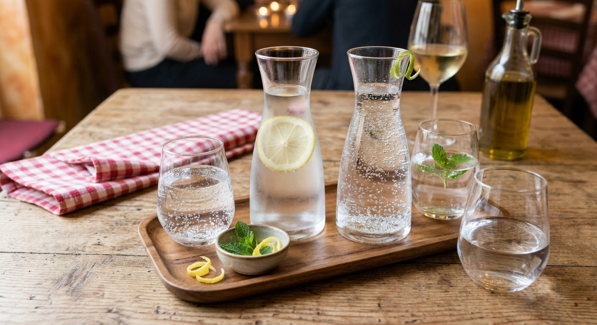
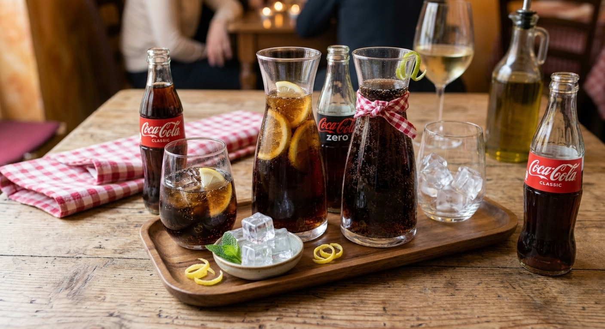
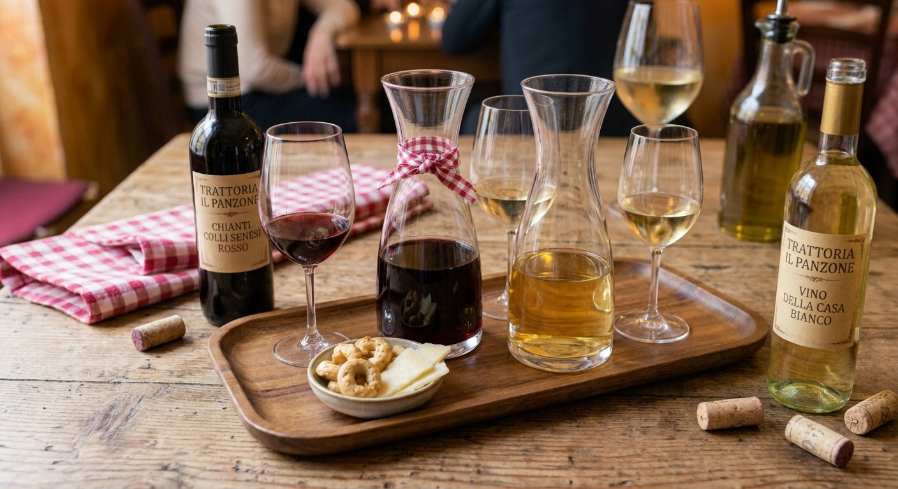

Dalla pasta fresca fatta in casa ogni mattina alle ricette
tramandate da
generazioni.
Presso la Trattoria IL PANZONE, ogni piatto è una
celebrazione dell'ospitalità italiana.
Acqua affinata di altissima qualità, freschissima e servita in caraffa. Disponibile sia naturale che con una leggera effervescenza per accompagnare al meglio ogni portata del nostro menù.

Prezzo: 2.00$
La bibita gassata per eccellenza, servita ghiacciata in vetro con cubetti di ghiaccio e una fetta di limone fresco. Fresca, dissetante e con il giusto tocco frizzante per accompagnare i nostri antipasti croccanti e i primi piatti della tradizione.

Prezzo: 3.50$
Una selezione curata dei nostri migliori vini per accompagnare ogni piatto del menù. Proponiamo il nostro Chianti Colli Senesi Rosso, corposo e intenso, e un fresco Vino della Casa Bianco, serviti sia in bottiglia che in caraffa (da 1L o 0,5L) direttamente al vostro tavolo.

Prezzo: 5.00$